High-dimensional Classification#
Learning Objectives
By the end of this chapter, you will be able to:
Load and explore a real chemical dataset and identify class imbalance
Apply an RBF kernel transformation to a high-dimensional feature matrix and explain its effect
Implement a kernel-augmented SVM by hand and compare it to sklearn’s
SVCUse
GridSearchCVto tune SVC hyperparameters on a held-out training setEvaluate classifier performance using accuracy, precision, recall, and confusion matrices
Distinguish categorical from ordinal variables and apply one-hot encoding with
pd.get_dummiesand a leakage-safeOneHotEncoder+ColumnTransformerpipelineApply and interpret a depth-limited decision tree and read feature importances from the result
Derive the five steps of Linear Discriminant Analysis (LDA) and explain why it finds more class-discriminative projections than PCA
The previous chapters introduced classification algorithms on simple two-dimensional toy datasets. Here we apply these methods to a real chemical engineering problem: predicting whether a given elemental combination will form a stable perovskite crystal structure. This introduces challenges that toy data conceals — correlated features, class imbalance, and the need to carefully separate training from test data before any hyperparameter tuning.
Working with real data also requires thinking carefully about the full modeling pipeline. In research and industrial settings, a common mistake is to use the test set — even informally, by looking at results and adjusting the model — before final evaluation. This form of data leakage produces optimistic accuracy estimates that do not generalize. The correct procedure is:
Split data into training and test sets immediately.
Perform all preprocessing, feature selection, and hyperparameter tuning on the training set only (typically using cross-validation).
Evaluate the final model on the test set once.
We follow this protocol throughout this chapter.
Perovskite Dataset#
Perovskites (ABX\(_3\) compounds) are a structurally versatile class of oxide and halide materials with applications ranging from catalysis to photovoltaics. Whether a given combination of A, B, and X elements adopts the perovskite structure depends on subtle geometric and electronic factors. The dataset used here comes from Bartel et al. (2019), who compiled 576 compounds with experimentally confirmed labels (\(+1\) = perovskite, \(-1\) = non-perovskite) alongside eight numerical features:
Feature |
Description |
|---|---|
|
Formal oxidation states of A, B, X ions |
|
Ionic radii (Angstrom) |
|
Goldschmidt tolerance factor |
|
New tolerance factor proposed in the paper |
%matplotlib inline
import numpy as np
import pandas as pd
import matplotlib.pyplot as plt
import seaborn as sns
plt.style.use('../settings/plot_style.mplstyle')
clrs = np.array(['#003057', '#EAAA00', '#4B8B9B', '#B3A369', '#377117',
'#1879DB', '#8E8B76', '#F5D580', '#002233'])
df = pd.read_csv('data/perovskite_data.csv')
df.head(10)
| ABX3 | A | B | X | nA | nB | nX | rA (Ang) | rB (Ang) | rX (Ang) | t | tau | exp_label | |
|---|---|---|---|---|---|---|---|---|---|---|---|---|---|
| 0 | AgBiO3 | Ag | Bi | O | 1 | 5 | -2 | 1.28 | 0.76 | 1.40 | 0.88 | 4.07 | -1 |
| 1 | AgBrO3 | Ag | Br | O | 1 | 5 | -2 | 1.28 | 0.31 | 1.40 | 1.11 | 6.43 | -1 |
| 2 | AgCaCl3 | Ag | Ca | Cl | 1 | 2 | -1 | 1.28 | 1.00 | 1.81 | 0.78 | 6.00 | -1 |
| 3 | AgCdBr3 | Ag | Cd | Br | 1 | 2 | -1 | 1.28 | 0.95 | 1.96 | 0.79 | 5.58 | -1 |
| 4 | AgClO3 | Ag | Cl | O | 1 | 5 | -2 | 1.28 | 0.12 | 1.40 | 1.25 | 15.17 | -1 |
| 5 | AgCoF3 | Ag | Co | F | 1 | 2 | -1 | 1.28 | 0.74 | 1.33 | 0.89 | 3.96 | 1 |
| 6 | AgCuF3 | Ag | Cu | F | 1 | 2 | -1 | 1.28 | 0.73 | 1.33 | 0.90 | 3.94 | 1 |
| 7 | AgMgCl3 | Ag | Mg | Cl | 1 | 2 | -1 | 1.28 | 0.72 | 1.81 | 0.86 | 4.60 | -1 |
| 8 | AgMgF3 | Ag | Mg | F | 1 | 2 | -1 | 1.28 | 0.72 | 1.33 | 0.90 | 3.94 | 1 |
| 9 | AgMnF3 | Ag | Mn | F | 1 | 2 | -1 | 1.28 | 0.83 | 1.33 | 0.85 | 4.16 | 1 |
feature_columns = ['nA', 'nB', 'nX', 'rA (Ang)', 'rB (Ang)', 'rX (Ang)', 't', 'tau']
X_perov = df[feature_columns].values
y_perov = df['exp_label'].values
print(f'Feature matrix shape: {X_perov.shape}')
print(f'Class distribution: {dict(zip(*np.unique(y_perov, return_counts=True)))}')
Feature matrix shape: (576, 8)
Class distribution: {np.int64(-1): np.int64(263), np.int64(1): np.int64(313)}
Note that the labels are \(\pm 1\) rather than \(0/1\). The classes are not perfectly balanced — this matters when interpreting accuracy alone. A naive classifier that predicts “non-perovskite” for every sample would still achieve moderate accuracy simply by exploiting the class imbalance, without learning anything useful. This is why precision, recall, and the confusion matrix are essential supplements to accuracy for imbalanced binary classification tasks.
fig, ax = plt.subplots(figsize=(5, 4))
ax.hist(y_perov, bins=[-1.5, -0.5, 0.5, 1.5], rwidth=0.6)
ax.set_xticks([-1, 1])
ax.set_xticklabels(['Non-perovskite (−1)', 'Perovskite (+1)'])
ax.set_ylabel('Count')
ax.set_title('Class distribution')
plt.tight_layout()
plt.show()
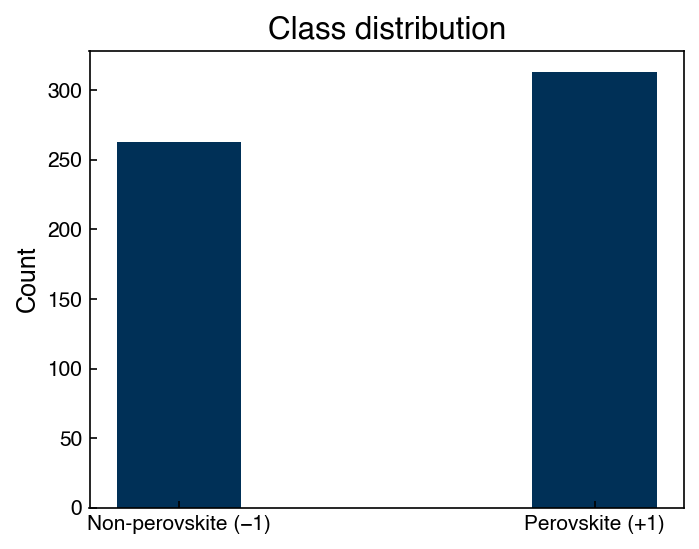
# map y in {-1, 1} to color indices {0, 1}
cidx = ((y_perov + 1) // 2).astype(int)
fig, axes = plt.subplots(1, 3, figsize=(15, 5))
axes[0].scatter(X_perov[:, 3], X_perov[:, 4], c=clrs[cidx], alpha=0.3)
axes[0].set_xlabel(feature_columns[3])
axes[0].set_ylabel(feature_columns[4])
axes[0].set_title('rA vs rB')
axes[1].scatter(X_perov[:, 4], X_perov[:, 5], c=clrs[cidx], alpha=0.3)
axes[1].set_xlabel(feature_columns[4])
axes[1].set_ylabel(feature_columns[5])
axes[1].set_title('rB vs rX')
axes[2].scatter(X_perov[:, 1], X_perov[:, 7], c=clrs[cidx], alpha=0.3)
axes[2].set_xlabel(feature_columns[1])
axes[2].set_ylabel(feature_columns[7])
axes[2].set_title('nB vs tau')
plt.tight_layout()
plt.show()
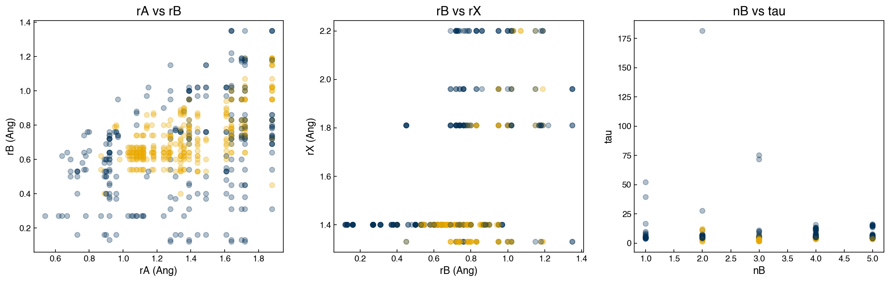
The scatter plots reveal that no single pair of features cleanly separates the two
classes. Points of both labels are heavily intermixed in all projections, although
nB vs tau (right panel) shows some tendency for perovskites to cluster at
higher \(\tau\) values. This motivates the use of all features together and non-linear
decision boundaries — no simple cut in any two-dimensional projection will suffice.
This is also a reminder that high-dimensional intuition is hard: the eight features together may define boundaries that are invisible in any pairwise projection but are readily learned by a kernel SVM or decision tree operating on the full feature matrix.
Exercise 58
Using the perovskite feature matrix X_perov and labels y_perov, produce scatter
plots for all pairs among the four features rA (Ang), rB (Ang), t, and tau.
Arrange them in a 4×4 grid (diagonal can show histograms). Identify which feature
pair appears to give the clearest visual separation between classes.
Kernel-based Classification#
The RBF Kernel Transformation#
In Topic 3.2 we saw that kernels implicitly map data into a higher-dimensional feature space where linear classifiers can find non-linear boundaries. Here we apply this idea explicitly: compute the radial basis function (RBF) kernel matrix \(K\) where
Each row of \(K\) is a new feature vector for sample \(i\), encoding its similarity to every other sample. The result is a \(576 \times 576\) matrix, regardless of the original number of features.
from sklearn.metrics.pairwise import rbf_kernel
from sklearn.metrics import accuracy_score, confusion_matrix
X_kernel = rbf_kernel(X_perov, X_perov, gamma=0.02)
print(f'Kernel matrix shape: {X_kernel.shape}')
Kernel matrix shape: (576, 576)
fig, axes = plt.subplots(1, 3, figsize=(15, 5))
axes[0].scatter(X_kernel[:, 3], X_kernel[:, 4], c=clrs[cidx], alpha=0.3)
axes[0].set_xlabel('$K_{i,3}$')
axes[0].set_ylabel('$K_{i,4}$')
axes[1].scatter(X_kernel[:, 4], X_kernel[:, 5], c=clrs[cidx], alpha=0.3)
axes[1].set_xlabel('$K_{i,4}$')
axes[1].set_ylabel('$K_{i,5}$')
axes[2].scatter(X_kernel[:, 1], X_kernel[:, 7], c=clrs[cidx], alpha=0.3)
axes[2].set_xlabel('$K_{i,1}$')
axes[2].set_ylabel('$K_{i,7}$')
axes[1].set_title('RBF Kernel ($\gamma = 0.02$) — projected coordinates')
plt.tight_layout()
plt.show()
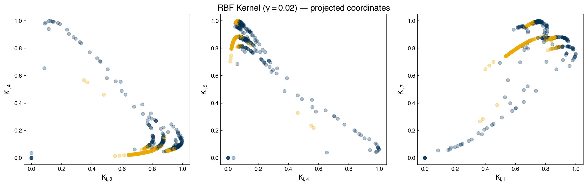
Manual SVM on Raw and Kernel-transformed Data#
To build intuition, we first train our custom margin-loss SVM (from Topic 3.2) on just two features, both before and after the kernel transform, and compare accuracy.
from scipy.optimize import minimize
def add_intercept(X):
return np.hstack([np.ones((X.shape[0], 1)), X])
def linear_classifier(X, w):
p = add_intercept(X) @ w
return np.where(p > 0, 1, -1)
def regularized_cost(w, X, y, alpha=1):
Xb = add_intercept(X) @ w
cost = np.sum(np.maximum(0, 1 - y * Xb))
cost += alpha * np.linalg.norm(w[1:], 2)
return cost
# SVM on original 2-feature data (rA, rB)
w_guess = np.array([-10., -4., -10.])
result = minimize(regularized_cost, w_guess, args=(X_perov[:, 3:5], y_perov, 1))
w_raw = result.x
pred_raw = linear_classifier(X_perov[:, 3:5], w_raw)
print(f'Accuracy (raw 2 features): {accuracy_score(y_perov, pred_raw):.3f}')
Accuracy (raw 2 features): 0.630
# SVM on kernel-transformed 2 features
result_k = minimize(regularized_cost, w_guess, args=(X_kernel[:, 3:5], y_perov, 1))
w_kernel = result_k.x
pred_kernel = linear_classifier(X_kernel[:, 3:5], w_kernel)
print(f'Accuracy (kernel 2 features): {accuracy_score(y_perov, pred_kernel):.3f}')
Accuracy (kernel 2 features): 0.847
The kernel-transformed version substantially outperforms the raw linear classifier on the same two features, demonstrating that the implicit higher-dimensional mapping allows a linear boundary in kernel space to act as a non-linear boundary in the original feature space.
Note that both models are still trained and evaluated on the same data here — we are illustrating the effect of the kernel, not measuring generalization. True generalization requires a held-out test set, which we use in the next section.
scikit-learn SVC#
The sklearn.svm.SVC handles the kernel transformation internally and is far more
efficient than our manual approach. Let’s compare results using 2 features vs. all 8:
from sklearn.svm import SVC
svc_2feat = SVC(kernel='rbf', gamma=100, C=1000)
svc_2feat.fit(X_perov[:, 3:5], y_perov)
print(f'SVC (2 features, train): {svc_2feat.score(X_perov[:, 3:5], y_perov):.3f}')
svc_all = SVC(kernel='rbf', gamma=100, C=1000)
svc_all.fit(X_perov, y_perov)
print(f'SVC (all features, train): {svc_all.score(X_perov, y_perov):.3f}')
SVC (2 features, train): 0.925
SVC (all features, train): 0.997
Both achieve near-perfect training accuracy — a warning sign of overfitting. With \(\gamma = 100\) and \(C = 1000\), the RBF kernel is extremely tight, creating tiny decision regions around individual training points. This is classic overfitting: the model has memorized the training data rather than learned generalizable structure. We must evaluate on held-out data and tune hyperparameters properly.
Hyperparameter Optimization with GridSearchCV#
We perform a proper train/test split first, then search only within the training set.
GridSearchCV trains a model for every combination of hyperparameters in the grid,
using \(k\)-fold cross-validation to estimate generalization error. Because this entire
search happens inside the training set, the test set remains completely unseen until
we call .score() on the best estimator:
from sklearn.model_selection import train_test_split, GridSearchCV
from sklearn.utils import shuffle
X_train, X_test, y_train, y_test = train_test_split(
X_perov, y_perov, test_size=0.33, random_state=42)
X_train, y_train = shuffle(X_train, y_train, random_state=42)
sigmas = np.array([1e-3, 1e-2, 1e-1, 1, 10, 100])
gammas = 1. / (2 * sigmas**2)
alphas = np.array([1e-6, 1e-5, 1e-4, 1e-3, 1e-2, 1e-1, 1])
Cs = 1 / alphas
svc = SVC(kernel='rbf')
svc_search = GridSearchCV(svc, {'C': Cs, 'gamma': gammas}, cv=3)
svc_search.fit(X_train, y_train)
print(f'Best params: {svc_search.best_params_}')
print(f'CV accuracy: {svc_search.best_score_:.3f}')
Best params: {'C': np.float64(1000.0), 'gamma': np.float64(0.5)}
CV accuracy: 0.925
best_svc = svc_search.best_estimator_
print(f'Test accuracy: {best_svc.score(X_test, y_test):.3f}')
Test accuracy: 0.927
y_pred_svc = best_svc.predict(X_test)
cm = confusion_matrix(y_test, y_pred_svc)
fig, ax = plt.subplots(figsize=(5, 5))
sns.heatmap(cm, annot=True, linewidth=0.5, cbar=False, fmt='d', ax=ax)
ax.set_xlabel('Predicted Class')
ax.set_ylabel('True Class')
ax.set_title('SVC — Test Set Confusion Matrix')
plt.tight_layout()
plt.show()
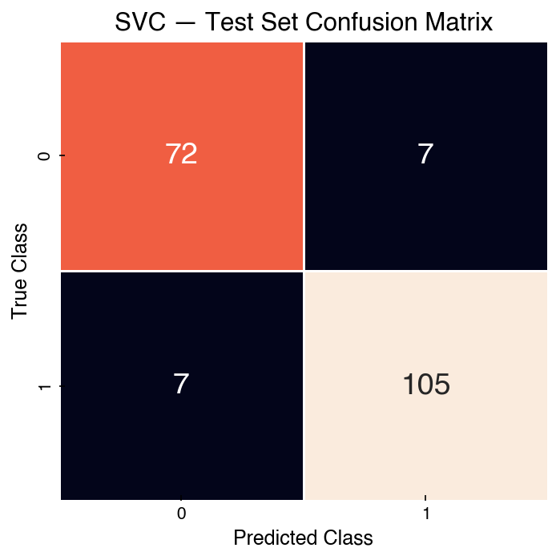
Demonstration: Precision and Recall#
Accuracy alone is misleading when classes are imbalanced. Precision and recall give a more complete picture. Recall the confusion matrix entries:
Predicted Positive |
Predicted Negative |
|
|---|---|---|
True Positive |
TP |
FN |
True Negative |
FP |
TN |
From these counts we define:
Accuracy = \(\frac{TP + TN}{TP + TN + FP + FN}\) — fraction of all predictions correct
Precision = \(\frac{TP}{TP + FP}\) — of all predicted positives, how many are correct?
Recall = \(\frac{TP}{TP + FN}\) — of all true positives, how many did we catch?
F1 score = \(\frac{2 \cdot \text{Precision} \cdot \text{Recall}}{\text{Precision} + \text{Recall}}\) — harmonic mean of precision and recall
In materials screening, recall is often the priority: missing a promising perovskite candidate (false negative) may be more costly than following up on a false positive in the lab. Choosing which metric to optimize is a domain decision, not a modeling one.
tn, fp, fn, tp = cm.ravel()
accuracy = (tp + tn) / (tp + tn + fp + fn)
precision = tp / (tp + fp)
recall = tp / (tp + fn)
f1 = 2 * precision * recall / (precision + recall)
print(f'Accuracy: {accuracy:.3f}')
print(f'Precision: {precision:.3f}')
print(f'Recall: {recall:.3f}')
print(f'F1 score: {f1:.3f}')
Accuracy: 0.927
Precision: 0.938
Recall: 0.938
F1 score: 0.938
Exercise 59
Apply KNeighborsClassifier (from sklearn) to the full perovskite feature matrix
using the same train/test split (X_train, X_test, y_train, y_test).
Use GridSearchCV with 3-fold cross-validation to search over
\(k \in \{3, 5, 10, 20, 50\}\). Print the best \(k\), the CV accuracy, and the test
accuracy. Compare to the best SVC result above.
Categorical Variables and One-Hot Encoding#
So far every model in this chapter has used only the numeric features — oxidation states, ionic radii, and tolerance factors. But the dataset also records which elements occupy the A, B, and X sites, and element identity is chemical information a model might exploit. These are categorical variables, and they require special treatment before any distance-based classifier can use them.
Categorical vs. Ordinal Variables#
Numerical features can be measured on a continuous scale, but many real datasets contain discrete variables that represent categories rather than magnitudes. There are two important types:
Ordinal variables: the order of values carries meaning (e.g., satisfaction rating 1–5, polymer chain length). Converting to a continuous float is often reasonable.
Categorical variables: the values are labels with no inherent ordering (e.g., element symbol, solvent name, process type). Representing “Ba” as 1 and “Sr” as 2 would mislead any model into thinking Ba is “twice” some quantity relative to Sr.
The standard solution for categorical variables is one-hot encoding: replace a column with \(k\) unique values by \(k\) binary columns (indicators), one per category. For example, a three-level color variable becomes:
color |
color_red |
color_blue |
color_green |
|---|---|---|---|
red |
1 |
0 |
0 |
blue |
0 |
1 |
0 |
green |
0 |
0 |
1 |
The Euclidean distance between two one-hot vectors is \(0\) if they share the same category and \(\sqrt{2}\) otherwise — so distance-based algorithms (k-NN, SVM with RBF kernel, k-means) can now meaningfully compare categorical entries.
One-Hot Encoding with pandas#
The perovskite DataFrame df contains string columns for the A, B, and X ion identities. pd.get_dummies() converts all non-numeric columns to one-hot automatically:
# Drop the formula column (compound identity, not a feature)
df_features = df[df.columns[1:]]
df_onehot = pd.get_dummies(df_features)
print(f'Original shape: {df_features.shape}')
print(f'After one-hot encoding: {df_onehot.shape}')
df_onehot.head(3)
Original shape: (576, 12)
After one-hot encoding: (576, 130)
| nA | nB | nX | rA (Ang) | rB (Ang) | rX (Ang) | t | tau | exp_label | A_Ag | ... | B_W | B_Y | B_Yb | B_Zn | B_Zr | X_Br | X_Cl | X_F | X_I | X_O | |
|---|---|---|---|---|---|---|---|---|---|---|---|---|---|---|---|---|---|---|---|---|---|
| 0 | 1 | 5 | -2 | 1.28 | 0.76 | 1.40 | 0.88 | 4.07 | -1 | True | ... | False | False | False | False | False | False | False | False | False | True |
| 1 | 1 | 5 | -2 | 1.28 | 0.31 | 1.40 | 1.11 | 6.43 | -1 | True | ... | False | False | False | False | False | False | False | False | False | True |
| 2 | 1 | 2 | -1 | 1.28 | 1.00 | 1.81 | 0.78 | 6.00 | -1 | True | ... | False | False | False | False | False | False | True | False | False | False |
3 rows × 130 columns
The A, B, and X element columns (each with many unique symbols) expand into indicator columns. The numeric features (nA, nB, nX, rA (Ang), etc.) are left unchanged.
# How many indicator columns were created per element site?
onehot_A = [c for c in df_onehot.columns if c.startswith('A_')]
onehot_B = [c for c in df_onehot.columns if c.startswith('B_')]
onehot_X = [c for c in df_onehot.columns if c.startswith('X_')]
print(f'A-site indicators: {len(onehot_A)}')
print(f'B-site indicators: {len(onehot_B)}')
print(f'X-site indicators: {len(onehot_X)}')
print(f'Total new dimensions: {len(onehot_A) + len(onehot_B) + len(onehot_X)}')
A-site indicators: 49
B-site indicators: 67
X-site indicators: 5
Total new dimensions: 121
Demonstration: Classifier Accuracy With and Without One-Hot Features#
We can compare how a support vector classifier performs using only the six raw numeric features (oxidation states and radii — the tolerance factors \(t\) and \(\tau\) are derived from these, so we exclude them here) vs. the full one-hot-encoded feature matrix:
regular_cols = ['nA', 'nB', 'nX', 'rA (Ang)', 'rB (Ang)', 'rX (Ang)']
all_cols = onehot_A + onehot_B + onehot_X + regular_cols
X_full = df_onehot[all_cols].values
Xoh_train, Xoh_test, yoh_train, yoh_test = train_test_split(
X_full, y_perov, test_size=0.4, random_state=42)
# Numeric-only model
N_reg = len(regular_cols)
Xoh_train_reg = Xoh_train[:, -N_reg:]
Xoh_test_reg = Xoh_test[:, -N_reg:]
C_range = np.logspace(-1, 4, 8)
gamma_range = np.logspace(-4, 0, 6)
params = {'C': C_range, 'gamma': gamma_range}
clf_reg = GridSearchCV(SVC(kernel='rbf'), params, cv=3)
clf_reg.fit(Xoh_train_reg, yoh_train)
score_reg = clf_reg.best_estimator_.score(Xoh_test_reg, yoh_test)
# Full one-hot model
clf_full = GridSearchCV(SVC(kernel='rbf'), params, cv=3)
clf_full.fit(Xoh_train, yoh_train)
score_full = clf_full.best_estimator_.score(Xoh_test, yoh_test)
print(f'Accuracy (numeric only, 6 features): {score_reg:.3f}')
print(f'Accuracy (+ one-hot elements, {len(all_cols)} features): {score_full:.3f}')
Accuracy (numeric only, 6 features): 0.922
Accuracy (+ one-hot elements, 127 features): 0.857
Results vary with the random split, but including element identity typically increases or maintains accuracy while exposing the model to richer chemical information.
sklearn OneHotEncoder#
pd.get_dummies is convenient for exploration, but sklearn.preprocessing.OneHotEncoder integrates cleanly into Pipeline objects and handles train/test separation correctly (it learns the category list from training data only):
from sklearn.preprocessing import OneHotEncoder
from sklearn.compose import ColumnTransformer
from sklearn.pipeline import Pipeline
cat_cols = ['A', 'B', 'X']
num_cols = ['nA', 'nB', 'nX', 'rA (Ang)', 'rB (Ang)', 'rX (Ang)']
X_raw = df[cat_cols + num_cols].values
y_raw = df['exp_label'].values
ct = ColumnTransformer([
('ohe', OneHotEncoder(sparse_output=False, handle_unknown='ignore'), list(range(len(cat_cols)))),
], remainder='passthrough')
pipe = Pipeline([
('encode', ct),
('clf', SVC(kernel='rbf', C=10, gamma=0.01)),
])
Xraw_train, Xraw_test, yraw_train, yraw_test = train_test_split(
X_raw, y_raw, test_size=0.4, random_state=42)
pipe.fit(Xraw_train, yraw_train)
print(f'Pipeline accuracy: {pipe.score(Xraw_test, yraw_test):.3f}')
Pipeline accuracy: 0.853
The ColumnTransformer applies OneHotEncoder only to the categorical columns and passes the numeric columns through unchanged. Using a pipeline ensures that the encoder is fit only on training data, preventing category leakage.
Exercise 60
Using the ColumnTransformer + Pipeline pattern above, add StandardScaler to the numeric columns (as a second transformer in the ColumnTransformer) before passing them to the SVC. Then:
Fit the pipeline on
Xraw_train, yraw_trainand report the test accuracy.Inspect the fitted encoder: print the categories learned from training data for each of the three element columns.
Explain in one sentence why fitting the encoder on training data only (rather than the full dataset) matters for avoiding data leakage.
Decision Trees on the Perovskite Dataset#
Decision trees work directly on the original feature space — no kernel transformation needed, and no assumption of Gaussian distributions or linear separability. They are also interpretable: we can read the learned rules directly from the tree diagram and extract quantitative feature importance scores from the trained model.
Overfitting and Depth Control#
from sklearn.tree import DecisionTreeClassifier, plot_tree
dtree = DecisionTreeClassifier(random_state=42)
dtree.fit(X_train, y_train)
cm_train = confusion_matrix(y_train, dtree.predict(X_train))
cm_test = confusion_matrix(y_test, dtree.predict(X_test))
fig, axes = plt.subplots(1, 2, figsize=(12, 5))
sns.heatmap(cm_train, annot=True, cbar=False, linewidth=0.5, ax=axes[0], fmt='d')
axes[0].set_xlabel('Predicted Class')
axes[0].set_ylabel('True Class')
axes[0].set_title('Unconstrained Tree — Training Set')
sns.heatmap(cm_test, annot=True, cbar=False, linewidth=0.5, ax=axes[1], fmt='d')
axes[1].set_xlabel('Predicted Class')
axes[1].set_ylabel('True Class')
axes[1].set_title('Unconstrained Tree — Test Set')
plt.tight_layout()
plt.show()
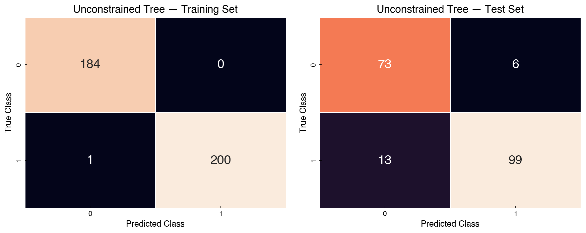
The unconstrained tree memorizes the training data (perfect training accuracy) but
generalizes less well to the test set. This is the hallmark of high-variance
overfitting: the model has grown enough branches to perfectly partition every
training point, including those that are noise or outliers.
Limiting max_depth acts as regularization, forcing the tree to find broader
rules that capture the dominant structure rather than individual training samples:
dtree3 = DecisionTreeClassifier(max_depth=3, random_state=42)
dtree3.fit(X_train, y_train)
cm_train3 = confusion_matrix(y_train, dtree3.predict(X_train))
cm_test3 = confusion_matrix(y_test, dtree3.predict(X_test))
fig, axes = plt.subplots(1, 2, figsize=(12, 5))
sns.heatmap(cm_train3, annot=True, cbar=False, linewidth=0.5, ax=axes[0], fmt='d')
axes[0].set_xlabel('Predicted Class')
axes[0].set_ylabel('True Class')
axes[0].set_title('Depth-3 Tree — Training Set')
sns.heatmap(cm_test3, annot=True, cbar=False, linewidth=0.5, ax=axes[1], fmt='d')
axes[1].set_xlabel('Predicted Class')
axes[1].set_ylabel('True Class')
axes[1].set_title('Depth-3 Tree — Test Set')
plt.tight_layout()
plt.show()
print(f'Depth-3 test accuracy: {dtree3.score(X_test, y_test):.3f}')
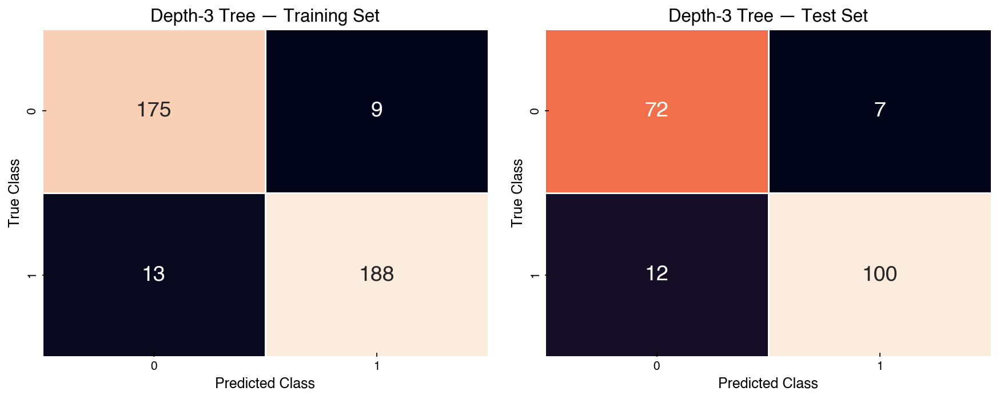
Depth-3 test accuracy: 0.901
The depth-3 tree has slightly lower training accuracy but comparable (or better) test accuracy — a clear improvement in the bias-variance trade-off. This illustrates a general principle: a simpler model that captures the dominant signal often generalizes better than a complex model that fits every detail of the training data.
Feature Importance#
fig, ax = plt.subplots(figsize=(12, 5))
plot_tree(dtree3, filled=True, rounded=True, ax=ax,
class_names=['Non-perovskite', 'Perovskite'],
feature_names=feature_columns)
plt.tight_layout()
plt.show()
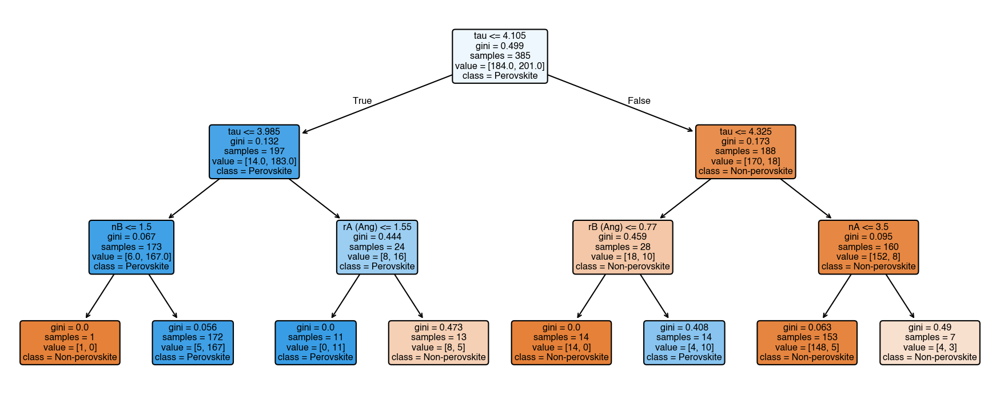
importances = dtree3.feature_importances_
sorted_idx = np.argsort(importances)[::-1]
fig, ax = plt.subplots(figsize=(8, 4))
ax.bar(range(len(feature_columns)), importances[sorted_idx])
ax.set_xticks(range(len(feature_columns)))
ax.set_xticklabels([feature_columns[i] for i in sorted_idx], rotation=30, ha='right')
ax.set_ylabel('Gini importance')
ax.set_title('Feature importances — depth-3 decision tree')
plt.tight_layout()
plt.show()
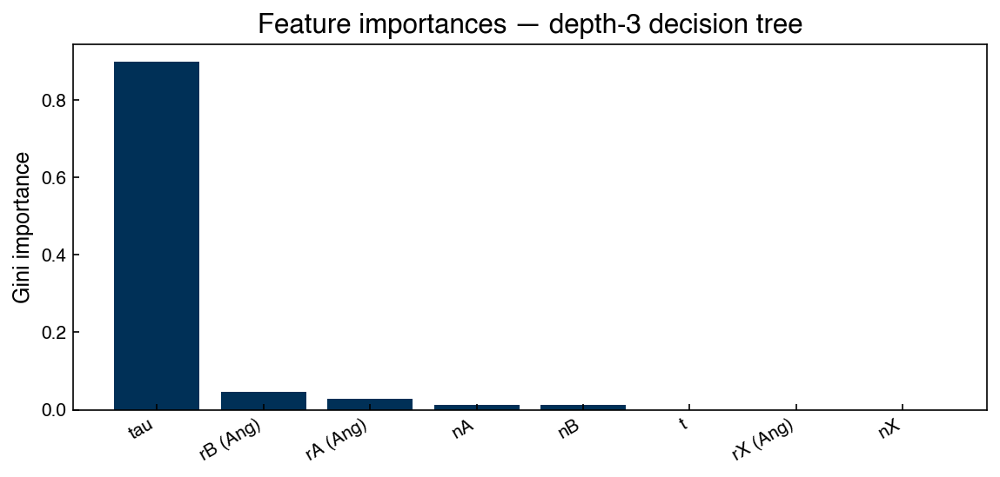
Note
The feature tau (index 7) consistently appears near the root of the decision tree
and carries the highest Gini importance. This aligns with the finding in Bartel et al.
(2019) that \(\tau\) is a better predictor of perovskite stability than the traditional
Goldschmidt tolerance factor \(t\). The ability to read feature importances directly
from a decision tree is one of its most practically valuable properties in materials
science and chemical engineering applications.
Exercise 61
Import RandomForestClassifier from sklearn.ensemble and train it on the
perovskite training set with n_estimators=100 and random_state=42.
Print the test accuracy and compare it to the depth-3 decision tree above.
Then plot the feature importances from the random forest alongside those from
the depth-3 tree and note any differences in the relative ranking of tau and t.
Linear Discriminant Analysis#
In Topic 2.5 we saw that Partial Least Squares is a supervised dimensionality reduction technique for regression — it finds latent directions that maximize covariance between \(X\) and \(y\). The classification analogue is Linear Discriminant Analysis (LDA): it finds directions that maximize the separation between class centroids relative to the within-class spread.
LDA is simultaneously a dimensionality reduction method (project \(n\)-dimensional features to at most \(C - 1\) dimensions, where \(C\) is the number of classes) and a classifier (assign points to the class whose centroid is nearest in the projected space). The decision boundaries are hyperplanes perpendicular to the LDA axes.
The LDA Algorithm: Manual Derivation#
We will step through the five-step derivation on a two-class toy dataset. Applying the scikit-learn implementation to a real 10-class, high-dimensional dataset is deferred to Dimensionality Reduction in Module 5, where LDA reappears as the supervised counterpart of PCA.
Step 1 — Class Centroids#
from sklearn.datasets import make_blobs
np.random.seed(0)
X_blobs, y_blobs = make_blobs(
n_samples=50, centers=2, cluster_std=0.5, n_features=2, random_state=0)
classes = [0, 1]
mean_vectors = []
for cl in classes:
mu_cl = X_blobs[y_blobs == cl].mean(axis=0)
mean_vectors.append(mu_cl)
print(f'Class {cl} centroid: {mu_cl}')
fig, ax = plt.subplots(figsize=(5, 4))
ax.scatter(X_blobs[:, 0], X_blobs[:, 1], c=[clrs[yi] for yi in y_blobs])
for mv in mean_vectors:
ax.plot(mv[0], mv[1], marker='*', markersize=15, c=clrs[2])
ax.set_title('Two-class blobs with class centroids')
plt.tight_layout()
Class 0 centroid: [0.98137069 4.28756914]
Class 1 centroid: [2.02437058 0.95630346]
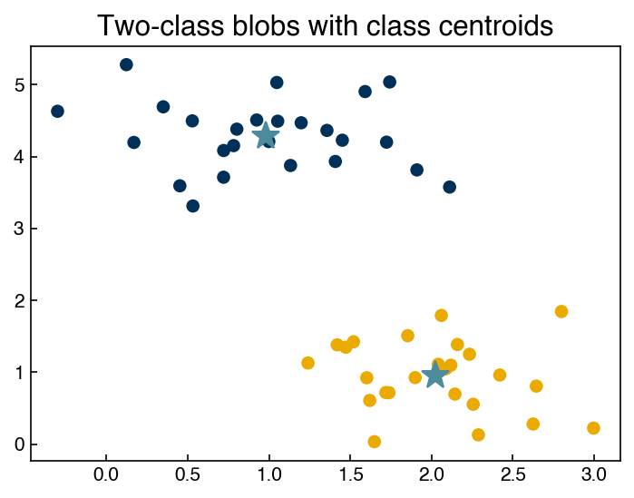
Step 2 — Intra-class Covariance#
The within-class (intra-class) covariance measures the spread of points around their own class centroid. LDA assumes all classes share the same covariance matrix, so we average:
class_covs = []
for cl, center in zip(classes, mean_vectors):
subX = X_blobs[y_blobs == cl]
subX_centered = subX - center
cov = (subX_centered.T @ subX_centered) / (subX.shape[0] - 1)
class_covs.append(cov)
# Pooled (averaged) intra-class covariance
intra = sum(class_covs) / len(class_covs)
print('Intra-class covariance:\n', intra)
Intra-class covariance:
[[ 0.28134397 -0.04196723]
[-0.04196723 0.24020378]]
Step 3 — Inter-class Covariance#
The between-class (inter-class) covariance measures the spread of the class centroids themselves:
center_array = np.array(mean_vectors)
inter = np.cov(center_array.T)
print('Inter-class covariance:\n', inter)
Inter-class covariance:
[[ 0.54392438 -1.73725486]
[-1.73725486 5.54866553]]
Step 4 — Composite Covariance Eigendecomposition#
We want directions where between-class variance is large and within-class variance is small. The composite matrix \(C_\text{intra}^{-1} C_\text{inter}\) achieves this:
comp = np.linalg.inv(intra) @ inter
eig_vals, eig_vecs = np.linalg.eig(comp)
eig_vecs = eig_vecs.T # rows are eigenvectors
print('Eigenvalues:', eig_vals)
LDvec1 = eig_vecs[0]
LDvec2 = eig_vecs[1]
mu_all = X_blobs.mean(axis=0)
# PCA axes for comparison
cov_all = np.cov(X_blobs.T)
_, pc_vecs = np.linalg.eig(cov_all)
pc_vecs = pc_vecs.T
PCvec1 = pc_vecs[0]
fig, ax = plt.subplots(figsize=(5, 4))
ax.scatter(X_blobs[:, 0], X_blobs[:, 1], c=[clrs[yi] for yi in y_blobs])
ax.plot(*mu_all, marker='x', color=clrs[3], markersize=10)
ax.plot([mu_all[0] - LDvec1[0], mu_all[0] + LDvec1[0]],
[mu_all[1] - LDvec1[1], mu_all[1] + LDvec1[1]],
'-', color=clrs[0], label='LDA axis 1')
ax.plot([mu_all[0] - PCvec1[0], mu_all[0] + PCvec1[0]],
[mu_all[1] - PCvec1[1], mu_all[1] + PCvec1[1]],
'-', color=clrs[1], label='PCA axis 1')
ax.legend()
ax.set_title('LDA vs PCA — first component axes')
plt.tight_layout()
Eigenvalues: [ 0. 23.48758374]
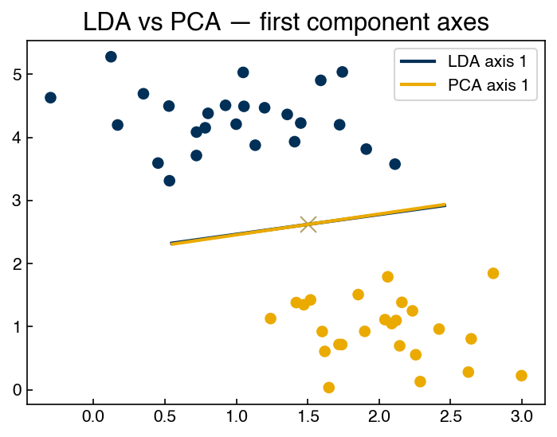
LDA’s axis points from one class centroid toward the other; PCA’s axis points toward maximum total variance regardless of class labels. For well-separated clusters these often agree, but they diverge when class variance is not aligned with inter-class separation.
Step 5 — Decision Boundary#
The LDA decision boundary is the hyperplane perpendicular to the discriminant axis, passing through the mean of the two class centroids. In 2D, rotating the eigenvector by 90° gives the boundary direction:
boundary = np.array([[0, -1], [1, 0]]) @ LDvec2
fig, ax = plt.subplots(figsize=(5, 4))
ax.scatter(X_blobs[:, 0], X_blobs[:, 1], c=[clrs[yi] for yi in y_blobs])
ax.plot([mu_all[0] - LDvec2[0], mu_all[0] + LDvec2[0]],
[mu_all[1] - LDvec2[1], mu_all[1] + LDvec2[1]],
'-', color=clrs[0], label='LDA axis')
ax.plot([mu_all[0] - boundary[0], mu_all[0] + boundary[0]],
[mu_all[1] - boundary[1], mu_all[1] + boundary[1]],
'--', color=clrs[0], label='Decision boundary')
ax.legend()
ax.set_title('LDA decision boundary (perpendicular to axis)')
plt.tight_layout()
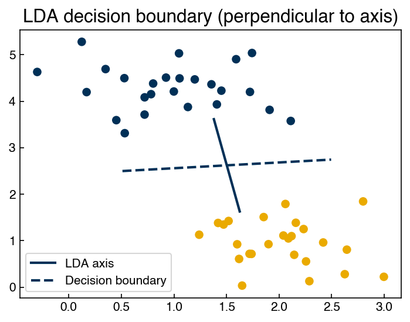
Note
LDA vs. PLS: the supervised dimensionality reduction pair LDA (for classification) and PLS (for regression) occupy symmetric roles: both find linear combinations of features supervised by the output, and both are especially useful when the number of features is large relative to the number of samples. The key difference is the type of output variable — discrete class labels for LDA, continuous values for PLS.
Exercise 62
Apply the five-step manual LDA derivation to the perovskite dataset, using the eight
numeric features (X_perov) and labels (y_perov, classes \(-1\)/\(+1\)):
Compute the two class centroids and the pooled intra-class covariance matrix.
Compute the inter-class covariance and the eigendecomposition of the composite matrix \(C_\text{intra}^{-1} C_\text{inter}\).
Project the data onto the leading LDA eigenvector (with two classes there is only one meaningful component) and plot overlapping histograms of the projected values for each class.
Repeat the projection using the leading eigenvector of the total covariance matrix (the first PCA component) and compare the class overlap in the two histograms. Which projection separates the classes better, and why?
Summary#
The perovskite dataset illustrates the full classification workflow on real data: exploratory scatter plots, train/test splitting, hyperparameter search on the training set, and evaluation on held-out data.
Kernel transformation maps the original feature space into a higher-dimensional similarity space, enabling a linear classifier to find non-linear boundaries. The RBF kernel with a well-chosen \(\gamma\) can dramatically improve accuracy over a raw linear SVM on the same features. The parameter \(\gamma\) controls the width of each Gaussian: large \(\gamma\) creates narrow kernels sensitive only to very nearby points (risk of overfitting); small \(\gamma\) creates broad kernels that average over large neighborhoods (risk of underfitting).
GridSearchCVautomates the search over \(C\) and \(\gamma\) using cross-validation on the training set only — the test set is never touched until final evaluation.Accuracy is a misleading metric for imbalanced datasets; precision and recall (and the combined F1 score) give a more complete picture of classifier performance.
Categorical variables (like element identity) must not be converted to raw integers; one-hot encoding replaces each category with a binary indicator column so that distance-based algorithms can compare categories correctly.
pd.get_dummiesis convenient for exploration;sklearn.preprocessing.OneHotEncoderinside aPipelineis the leakage-safe production pattern.Decision trees on real data are highly prone to overfitting when unconstrained, but
max_depthregularization recovers competitive generalization. Their interpretability — readable splitting rules and feature importance scores — makes them especially useful in science and engineering applications where understanding why a model makes a prediction matters as much as accuracy.Linear Discriminant Analysis (LDA) finds projections that maximize between-class variance relative to within-class variance — the supervised analogue of PCA for classification. It reduces \(p\)-dimensional features to at most \(C-1\) dimensions (\(C\) = number of classes) and serves as both a linear classifier and a preprocessing step for non-linear classifiers. LDA projections show better class separation than PCA projections because they use the class labels; PCA maximizes total variance regardless of class identity. LDA is applied to a real 10-class dataset in Module 5 (Dimensionality Reduction).
Additional Reading#
Bartel, C. J. et al. (2019), “New tolerance factor to predict the stability of perovskite oxides and halides,” Science Advances 5(2), eaav0693 — the source paper for this dataset
Hastie, Tibshirani & Friedman, The Elements of Statistical Learning, Ch. 12 (SVMs and kernels), Ch. 9 (Decision Trees) — free PDF
scikit-learn User Guide: SVM, GridSearchCV, Decision Trees